SlingSip landing page — local review
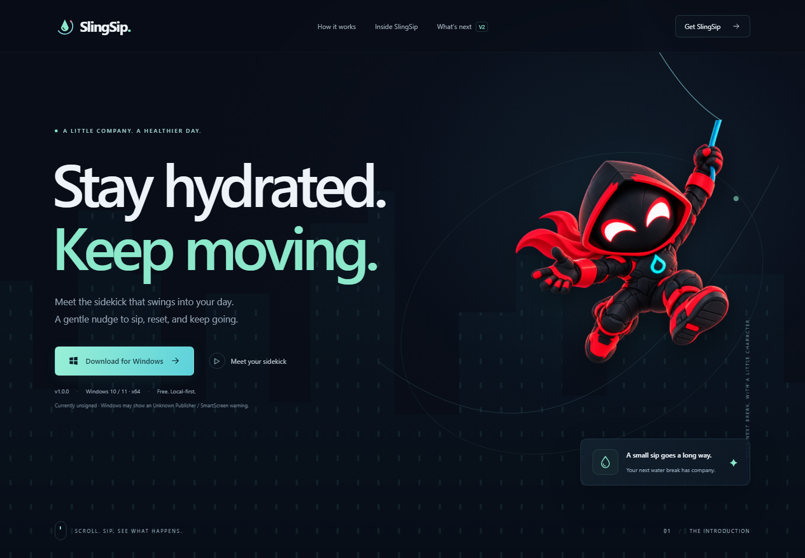
01 · Hero, desktop
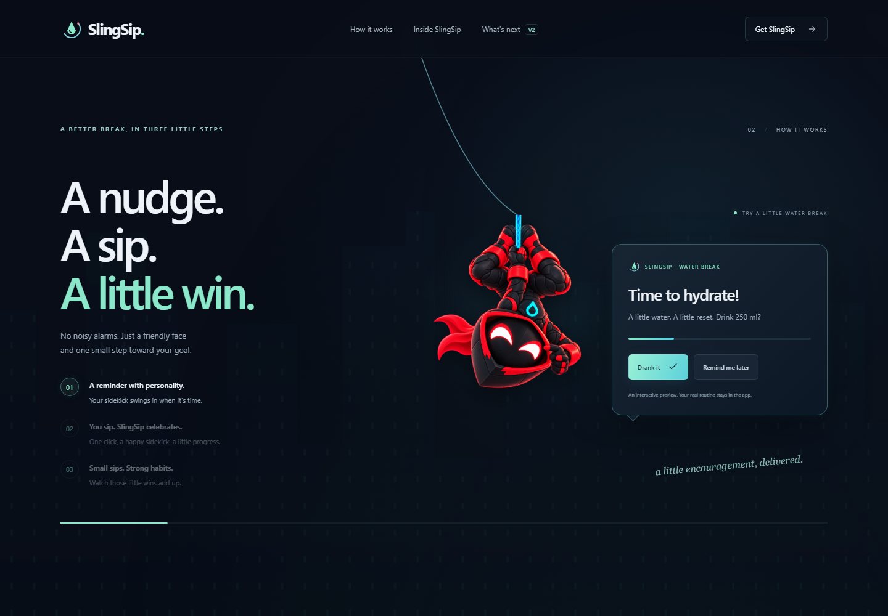
02 · A little water break
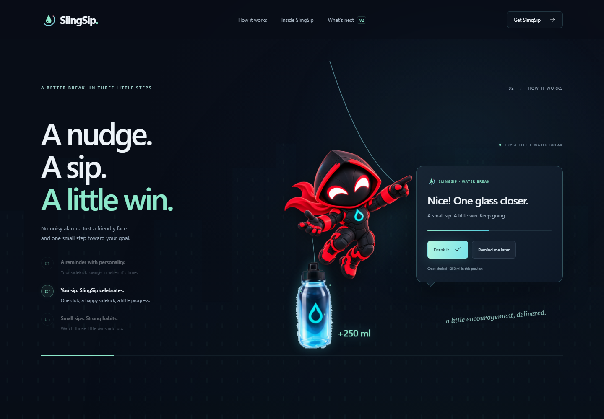
03 · Drank it / bottle success
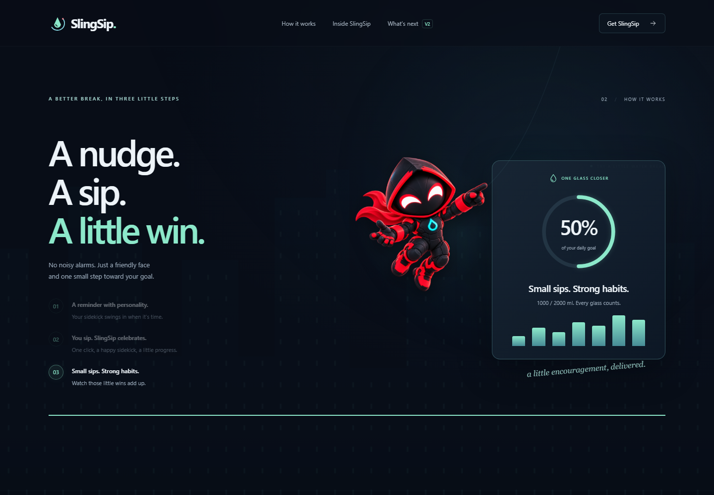
04 · Small sips. Strong habits.
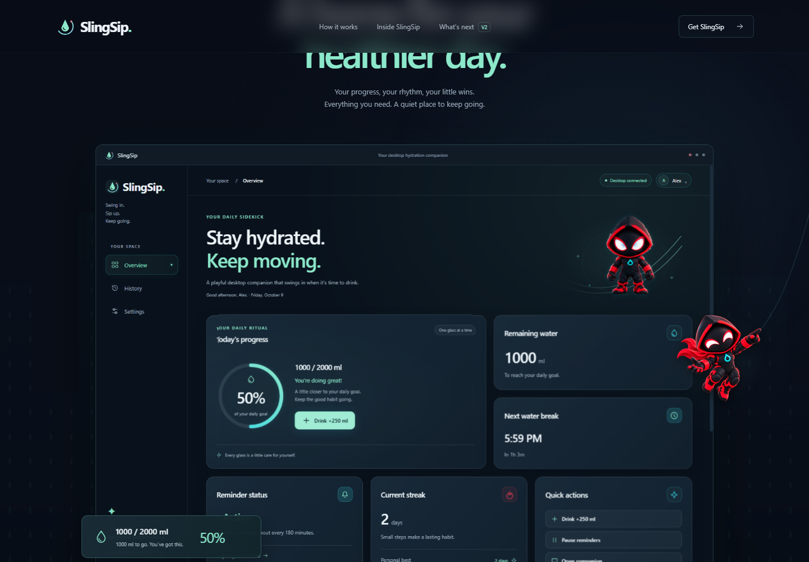
05 · The real dashboard
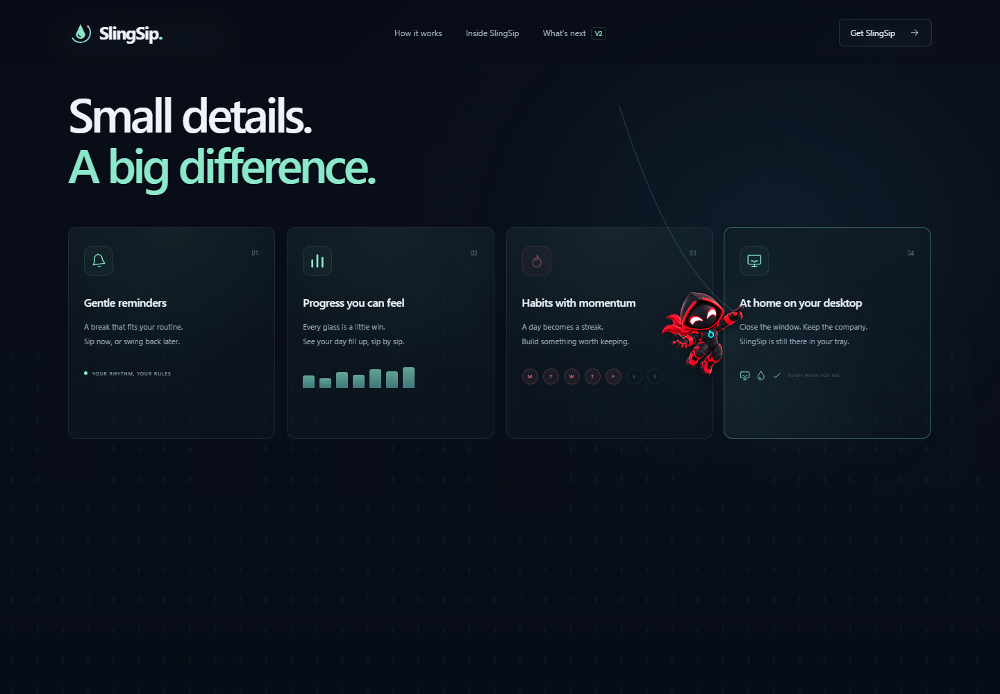
06 · Small details
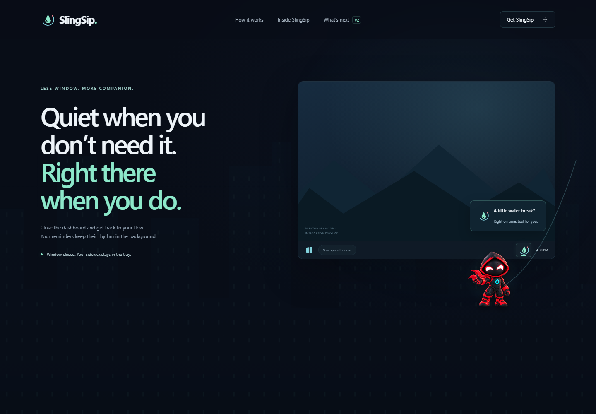
07 · Close to tray
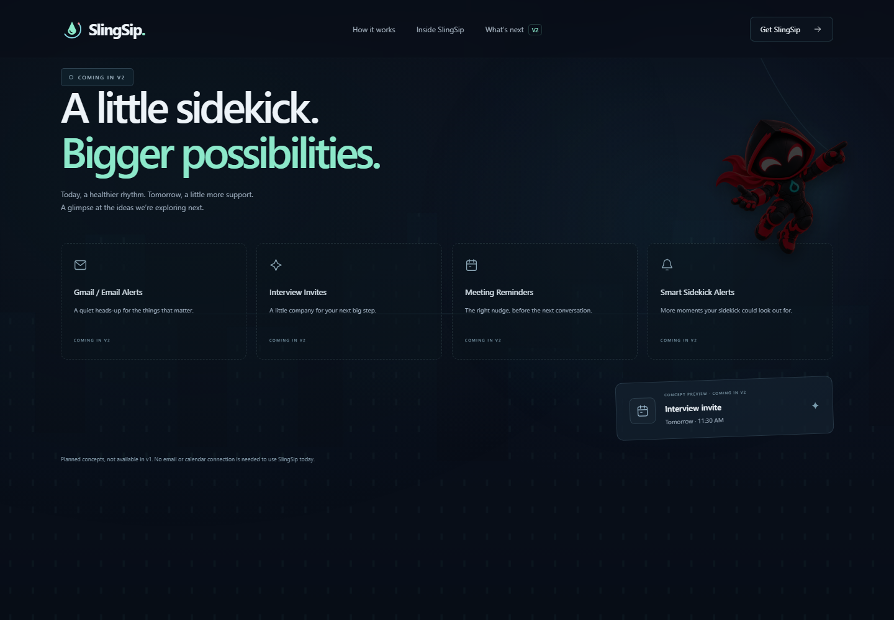
08 · Coming in V2
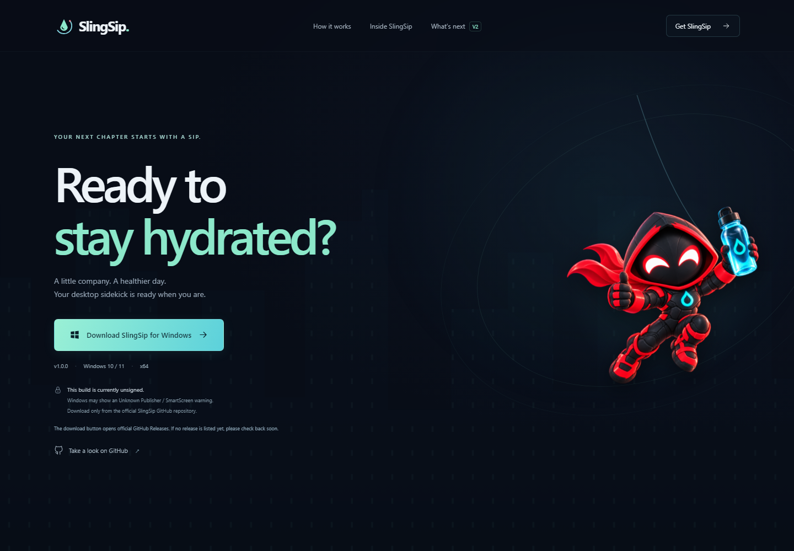
09 · Download finale
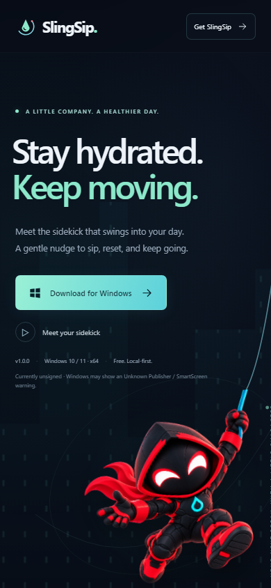
10 · Mobile hero
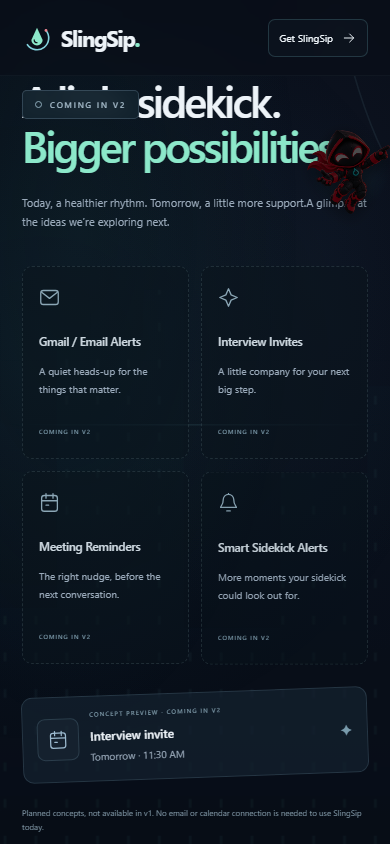
11 · Mobile future preview
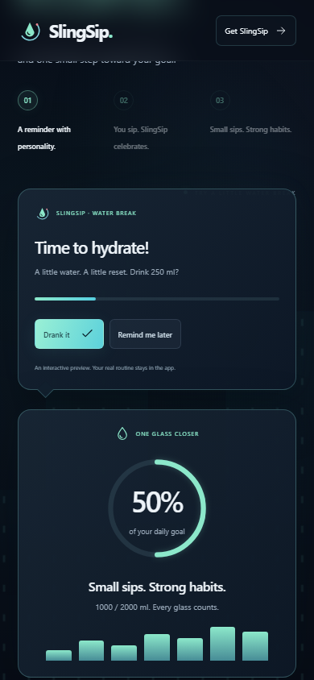
12 · Reduced motion